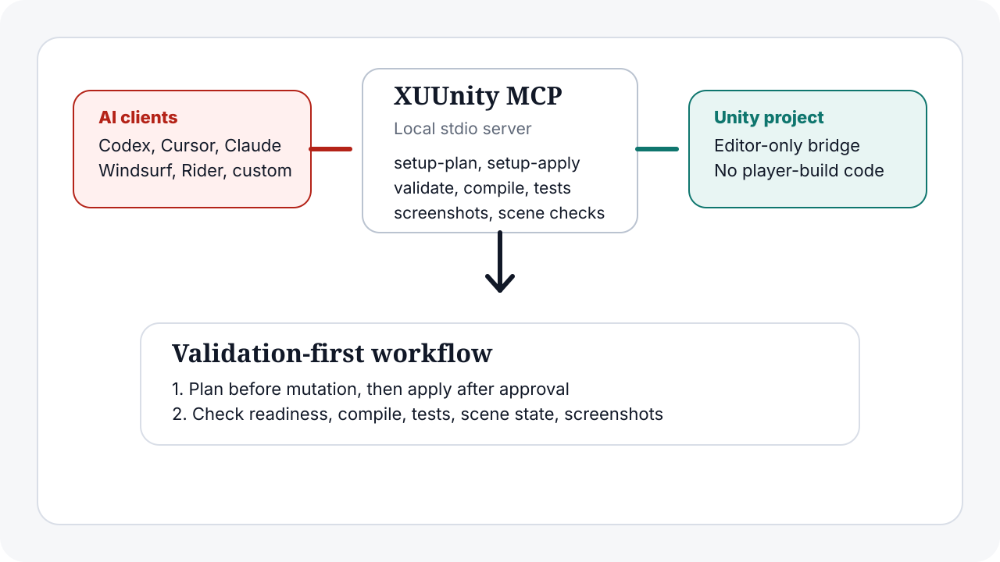

XUUnity Light Unity MCP
A lightweight Unity MCP server that lets AI agents work with the Unity Editor safely.
- One prompt setup
- Free Unity workflows
- No runtime footprint
Set up Unity MCP from one prompt
Add your Unity project path
Paste the absolute path to your Unity project. It replaces the highlighted placeholder in the prompt before you copy it.
macOS/Linux: /absolute/path/to/MyGame
Windows: C:\Projects\MyGame
Set up XUUnity Light Unity MCP release v0.3.72 from
the canonical repository
for /path/to/UnityProject. Follow
the release README for v0.3.72.
Do not execute an existing helper until its installed version
and .source_root have been checked and stale files
refreshed from v0.3.72. On native Windows, migrate only the
XUUnity client block to cmd.exe plus
run_installed_or_ and
preserve unrelated config. After any helper or client-config
change, restart or refresh the client, confirm
xuunity_light_unity, list the live MCP tools, and
run unity_status_summary. Require
mcp_server_info. in that live result. Only then run EditMode
tests in that project and print the results here.
Enter a project path to enable copying.
The useful parts, without the noise.
Built for Unity developers who want an agent to help, but still want setup control, editor safety, and evidence.
Faster first try
Paste the prompt once. The agent follows the v0.3.72 release README, checks old package/helper/client state, makes a setup plan, applies after approval, proves the restarted client loaded live tools, and can run the first EditMode test pass.
Better fit for validation than broad mutation
Some Unity MCPs optimize for a huge tool surface. XUUnity MCP optimizes for compile checks, tests, scene proof, console evidence, and a smaller editor automation boundary.
Works with free Unity project workflows
XUUnity MCP does not require a paid Unity subscription from the tool itself. It works with local Unity 2021.3+ editor projects, including Unity Personal/free project workflows.
Multi-project parallel routing
One local MCP server can route same-host work across multiple Unity projects. Per-project locks keep one project safe while other project streams can continue.
Mixed repo and SDK workspace aware
Workspace planning can scan flat hubs, nested repos, SDK repos, and mixed Unity versions, then compute setup actions per selected project.
Compile matrix without target switching
Validate build targets, options, defines, and build configs without switching the active Unity build target as the default check path.
No player-build footprint by default
The Unity package is editor-only and disabled by default. It is meant to help the Editor workflow, not ship runtime MCP code into the game.
Install and remove cleanly
Setup and uninstall both have plan/apply flows. Project-only cleanup removes the approved project state without surprise deletes elsewhere.
Agent support without client lock-in
Use Codex-style agents, Cursor, Claude Code, Claude Desktop, Windsurf, Rider, Antigravity IDE, or custom MCP clients through the same local stdio model.
Small local bridge, clear setup plan, Unity evidence.
The agent follows the README instead of guessing. It creates a non-mutating setup plan, waits for approval, wires the MCP client, enables the Unity Editor bridge, then runs validation tools only against the selected Unity project.

Validation details Compile checks, tests, scene assertions, screenshots, and setup recovery.
Keep this below the fold: it matters after the reader already understands the one-prompt setup value.
setup-plan, approval, setup-apply, validate-setup, and ensure-ready.Exact install commands for agents For agents that need the manual fallback after reading the README.
https://github.com/FoxsterDev/xuunity-mcp.git?path=/packages/com.xuunity.light-mcp#v0.3.72cd <APPROVED_V0.3.72_MCP_REPO_ROOT>
bash xuunity_light_unity_mcp.sh setup-plan \
--project-root /path/to/UnityProjectDecision frame When XUUnity MCP is the right Unity MCP choice.
Choose XUUnity MCP when
- You want validation-heavy Unity automation.
- You need compile checks and tests as first-class proof.
- You prefer reviewed setup mutation over hidden install churn.
- You want a local-first stdio workflow for common AI clients.
Choose a broader tool when
- You want the largest possible mutation surface.
- You need runtime/player automation as the main goal.
- You only want an official vendor-managed Unity path.
- You judge MCPs by raw tool count rather than validation quality.
Articles
Launch, comparison, and workflow pages for people researching Unity MCP options.
Introducing XUUnity MCP
Launch positioning for the safe, lightweight, validation-first Unity MCP story.
XUUnity MCP vs Unity MCP
Workflow comparison for broader and validation-first Unity MCP tools.
Compile checks and tests through MCP
A practical proof loop for setup, readiness, compile validation, and tests.
FAQ Optional details for readers who need exact wording.
Is XUUnity MCP the same thing as XUUnity Light Unity MCP?
Yes. XUUnity MCP is the short public product name. XUUnity Light Unity MCP is the full technical package and repository name.
Does one-prompt setup skip approval?
No. The prompt asks the agent to use the README flow. The safe path still includes setup-plan, review, approval, setup-apply, validate-setup, and ensure-ready.
When should I choose XUUnity MCP over broader Unity MCP tools?
Choose it when you care most about setup safety, editor-only footprint, compile checks, tests, and validation-heavy workflows rather than the broadest possible mutation surface.